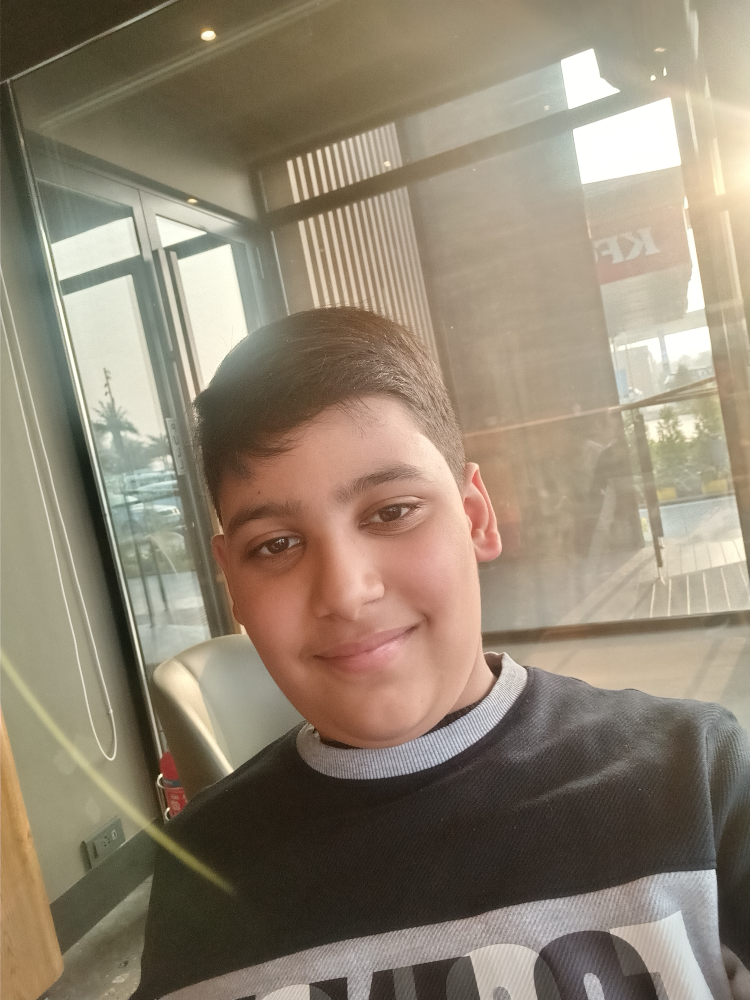

Explore the art of coding and programming with me. Whether you're a beginner or an experienced developer, you'll find valuable resources and inspiration here.
Join me on this journey as we delve into the fascinating world of software development.
In this coding universe, you'll discover:
Insightful tutorials on a variety of programming languages, frameworks, and technologies.
Real-world coding challenges that will sharpen your problem-solving skills.
In-depth articles exploring the latest trends and innovations in the tech world.
Expert tips and tricks to optimize your code and enhance your development workflow.
A supportive community of fellow coders eager to learn and share their knowledge.
Whether you're passionate about web development, mobile apps, data science, or anything in between, you'll find something here to ignite your coding passions.
So, grab your keyboard, fire up your favorite code editor, and let's embark on an exciting coding adventure together!
If you ever have questions, feedback, or simply want to say hello, feel free to contact me.
Why Coding Matters
Coding is not just lines of text; it's the language of innovation. In today's digital age, coding empowers us to create solutions to complex problems, build incredible applications, and shape the future.
Whether you dream of developing the next groundbreaking app, analyzing big data, or contributing to open-source projects, coding is your key to unlocking endless possibilities.
Let's Get Started
Ready to start your coding journey? Explore the various sections of this website to find the resources and inspiration you need. Whether you're a coding newbie or a seasoned pro, there's always something new to learn and create.
Thank you for visiting my coding world. Let's write some amazing code together!
About Me

Hello, I'm Aansh Sood, and I'm passionate about coding and technology. With 2 years of experience in software development, I'm excited to share my knowledge and journey with you.
My journey in coding began when , just i got interested and soon you will be too. Since then, I've had the privilege of working on games, websites, apps and I'm dedicated to helping you succeed in your coding endeavors.
My Expertise
Throughout my career, I've specialized in various areas, including:
Front-end web development, creating stunning and user-friendly interfaces.
Game Devolpment, creating interesting and enjoyable games.
My Coding Philosophy
I believe that coding is not just a skill; it's a way of thinking and problem-solving. It empowers us to turn ideas into reality and solve real-world challenges. My goal is to inspire you to embrace the world of coding and discover the endless possibilities it offers.
Let's Learn Together
On this website, you'll find a wealth of coding resources, tutorials, and projects. Whether you're a beginner taking your first steps in coding or an experienced developer looking to expand your skills, there's something here for you. Let's learn, code, and grow together!
If you have any questions or want to get in touch, feel free to contact me. I'm always excited to connect with fellow coders and technology enthusiasts.
My Favorite Programming Languages
Some of my favorite programming languages include:
JavaScript, for its versatility and its role in building interactive web applications.
Python, for its simplicity and wide range of applications, from web development to data science.
Java, for its robustness and use in Android app development.
While these are some of my featured projects, there's a lot more to explore. From web development to mobile apps, here are a few areas of my expertise:
Web Application Development
Mobile App Development
Data Analysis and Visualization
Machine Learning Projects
My Coding Process
When I work on a coding project, I follow a systematic approach:
Understanding the Problem: I start by thoroughly understanding the problem or requirements.
Planning: Next, I plan the project, outline the architecture, and define milestones.
Coding: The coding phase involves writing clean, maintainable code.
Testing and Debugging: Rigorous testing and debugging ensure the project works flawlessly.
Deployment: Once satisfied, I deploy the project and monitor its performance.
Open Source Contributions
I'm a strong advocate for open source software. I actively contribute to open source projects and believe in giving back to the community. You can find my contributions on GitHub and GitLab.
Collaborate with Me
If you have an exciting project idea or want to collaborate on a coding project, I'd love to hear from you. Feel free to get in touch, and let's turn your ideas into reality!
Code Snippets
JavaScript Example
// This is a JavaScript code snippet
function greet(name) {
return 'Hello, ' + name + '!';
}
console.log(greet('World'));
Python Example
# This is a Python code snippet
def greet(name):
return 'Hello, ' + name + '!'
print(greet('Python'))
C++ Example
// This is a C++ code snippet
#include <iostream>
using namespace std;
int main() {
cout << "Hello, C++!" << endl;
return 0;
}
Contact Me
Thank you for visiting my website. If you have any questions, feedback, or would like to get in touch, please feel free to reach out to me.